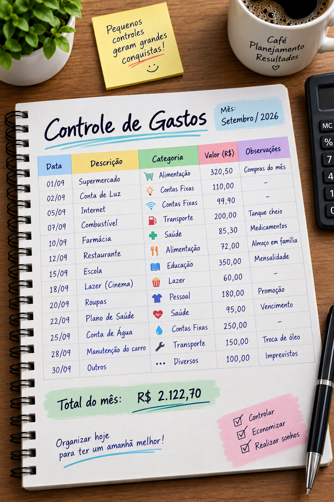
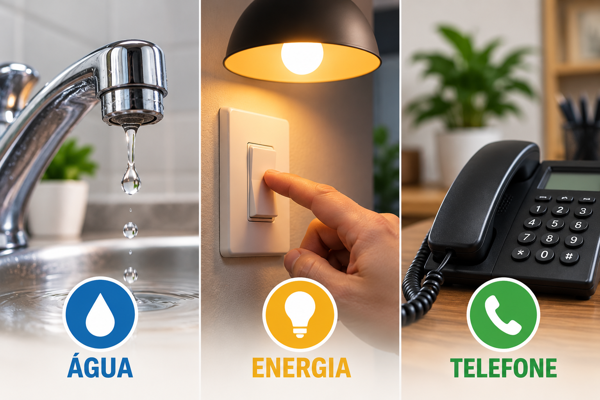
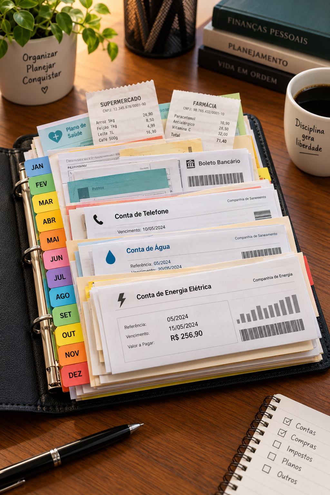

Habilidades Domésticas
Um guia completo para entender cada requisito da especialidade: da lista do supermercado ao juro composto, da conta de luz à mordomia fiel.
O ponto de partida
Orçamento familiar é o planejamento escrito de todo o dinheiro que entra e sai de uma casa em um período — normalmente um mês. Ele lista as receitas (salários, benefícios, renda extra) e as despesas (moradia, alimentação, transporte, educação, saúde, lazer, dízimos e ofertas, poupança) para mostrar, com números reais, para onde o dinheiro está indo.
Sua importância é simples: sem orçamento, a família administra por sensação — e a sensação quase sempre erra. Com orçamento, a família:

Durante 30 dias, anote cada centavo — inclusive o cafezinho. É o diagnóstico.
Separe as despesas em fixas e variáveis, e em necessárias, úteis e supérfluas.
Corte o supérfluo, defina metas, revise todo mês em família. Orçamento é hábito, não evento.
Requisito prático
Um mesmo gasto pode mudar de categoria conforme a realidade da família — por isso a classificação deve ser feita em conjunto, conversando. O modelo abaixo serve como base para a sua lista.
| Necessárias (sobrevivência e dignidade) | Úteis (facilitam a vida, mas dá para adiar) | Supérfluas (puro desejo/impulso) |
|---|---|---|
| Aluguel ou prestação da casa; água; energia elétrica; gás | Internet e plano de celular acima do básico | Refeições por delivery com frequência |
| Alimentação básica (arroz, feijão, ovos, frutas, verduras) | Transporte por aplicativo quando há ônibus | Vários serviços de streaming simultâneos |
| Remédios de uso contínuo e plano/consultas de saúde | Assinatura de academia, curso extra, livros | Trocar de celular sem necessidade |
| Material escolar e mensalidade da escola | Móvel novo para substituir um que ainda funciona | Roupas por moda, compras por impulso, jogos pagos |
| Transporte para trabalho/escola; higiene e limpeza básicas | TV por assinatura, seguro de aparelhos | Cigarro, refrigerante em excesso, “promoção” não planejada |
| Dízimo e ofertas; poupança/reserva (pague-se primeiro) | Passeio mensal em família | Extras cobrados em fatura que ninguém usa |
Auditoria do carrinho
Ao conferir a lista da sua família, avalie item por item com quatro perguntas: já temos em casa? é para quantos dias? existe versão mais barata da mesma qualidade? entrou na lista ou no impulso?
Na prática, quase toda família encontra itens dispensáveis: refrigerantes e sucos industrializados, biscoitos e salgadinhos, descartáveis, três produtos de limpeza diferentes para a mesma função, amaciantes e “aromatizadores”, e marcas premium em produtos genéricos (água sanitária, álcool, sabão em pó).
Pesquisa de campo
Esta é uma tarefa de investigação no seu bairro — o resultado varia de cidade para cidade. Faça assim: descubra os dias da feira livre na sua região (prefeituras publicam a lista), visite também o sacolão/varejão, o mercado municipal e um supermercado grande, e anote o preço dos mesmos 8 a 10 itens em cada lugar, no mesmo período.
O padrão que quase sempre se repete no Brasil:
Contas de consumo

Economia explicada
Inflação é o aumento geral e contínuo dos preços de bens e serviços em uma economia, ao longo do tempo. Seu efeito prático é a perda do poder de compra: com a mesma quantia de dinheiro, você compra menos coisas do que comprava antes.
Se o carrinho de supermercado que custava R$ 100 passa a custar R$ 106 em um ano, a inflação daquele carrinho foi de 6%. No Brasil, o índice oficial é o IPCA, medido pelo IBGE, que acompanha o gasto de famílias com renda de 1 a 40 salários mínimos. O Banco Central controla a inflação principalmente pela taxa Selic: juros mais altos esfriam o consumo e seguram os preços.
Obrigações do calendário
Além dos tributos “invisíveis” embutidos em tudo o que se compra (ICMS, IPI, PIS/Cofins e ISS, que podem representar de 20% a mais de 40% do preço final de muitos produtos), toda família tem tributos com data marcada. As datas variam por estado e município — confira sempre o calendário oficial da sua cidade.
| Tributo | Sobre o quê | Quando costuma ser pago | Dica |
|---|---|---|---|
| IPTU | Propriedade urbana (casa, apartamento, terreno) | Cota única ou parcelas a partir de janeiro/fevereiro | Cota única costuma ter desconto de 5% a 15% |
| IPVA | Propriedade de veículo automotor | Janeiro a abril, escalonado pelo final da placa | Some com licenciamento e seguro obrigatório (DPVAT, quando cobrado) |
| Imposto de Renda (IRPF) | Rendimentos anuais acima do limite de isenção | Declaração de março a maio; retido na fonte todo mês no salário | Declare cedo para receber restituição nos primeiros lotes |
| ITR | Propriedade rural | Declaração em agosto/setembro | Só para quem tem imóvel rural |
| Taxa de lixo / iluminação pública | Serviços municipais | Junto ao IPTU ou na conta de luz | Confira se está na sua conta de energia |
| ICMS / ISS / PIS / Cofins | Produtos e serviços consumidos | Todo dia, embutidos no preço | Veja o valor dos tributos impresso no rodapé da nota fiscal |
| INSS | Contribuição previdenciária | Mensal (descontado do salário ou por guia) | Garante aposentadoria, auxílio-doença e salário-maternidade |
Regra de sobrevivência
A regra é clara: nunca financie aquilo que acaba antes de a última parcela vencer — e nunca financie o que você não teria coragem de comprar à vista.
Por quê? Porque o parcelamento compromete a renda futura, que ainda não existe e não é garantida; porque o preço a prazo quase sempre embute juros altos; e porque a soma de várias parcelas “pequenas” engessa o orçamento — qualquer imprevisto vira inadimplência.
Matemática financeira
Juro é o preço do dinheiro no tempo — o valor pago por quem toma emprestado e recebido por quem empresta ou investe. É sempre expresso como percentual por período (ao mês, a.m., ou ao ano, a.a.).
Incide sempre sobre o valor inicial (capital). Raro no dia a dia.
J = C × i × t
M = C + J
Exemplo: R$ 1.000 a 2% a.m. por 6 meses → J = 1000 × 0,02 × 6 = R$ 120. Montante: R$ 1.120.
Incide sobre o capital somado aos juros já acumulados. É o modelo usado por bancos, cartões e investimentos.
M = C × (1 + i)t
J = M − C
Mesmo caso: 1000 × (1,02)6 = R$ 1.126,16 → juros de R$ 126,16. A diferença parece pequena em 6 meses; em 5 anos vira uma montanha.
Taxa e prazo precisam estar no mesmo período. 2% a.m. não é 24% a.a.: é (1,02)12 − 1 ≈ 26,8% a.a.
O Custo Efetivo Total inclui juros + IOF + tarifas + seguros. É por ele que se comparam propostas.
72 ÷ taxa (%) = tempo para o dinheiro dobrar. A 1% ao mês, dobra em 72 meses (6 anos).
Pesquisa de taxas
As taxas mudam todo mês e variam por banco e por cliente. A fonte oficial para a pesquisa é o Banco Central do Brasil, que publica o ranking de taxas de juros por instituição, e o site do seu próprio banco. Use a tabela abaixo como referência da ordem de grandeza praticada no mercado brasileiro — e depois preencha com as taxas reais que você pesquisar.
| Linha de crédito | Juros ao mês (faixa típica) | Equivalente ao ano | Encargos além dos juros |
|---|---|---|---|
| Cartão de crédito — rotativo quando se paga menos que o total da fatura |
~12% a 16% | ~290% a 430% | IOF, multa de 2% e mora de 1% a.m. em atraso; anuidade |
| Cartão de crédito — parcelamento da fatura | ~7% a 10% | ~125% a 215% | IOF e tarifas de contratação |
| Cheque especial | limite legal de 8% (teto do BC) | ~150% | IOF diário; tarifa de até 0,25% sobre limite acima de R$ 500 |
| Empréstimo pessoal (não consignado) | ~3% a 8% | ~43% a 150% | IOF, tarifa de cadastro, seguro prestamista |
| Crédito consignado (desconto em folha) | ~1,5% a 2% | ~20% a 27% | Menor risco para o banco = menor taxa |
Plano de resgate
Construindo patrimônio
A recomendação clássica de educadores financeiros é poupar no mínimo 10% da renda líquida da família, buscando chegar a 20% ou mais quando possível. Em situações apertadas, comece com 5% — o valor importa menos que o hábito.
Um bom mapa mensal é a regra 50/30/20:
Para famílias cristãs, o desenho costuma ser: 10% dízimo → ofertas → 10% a 20% poupança → o restante para as despesas. Guardar primeiro e gastar o que sobra funciona; gastar primeiro e guardar o que sobra nunca funcionou.
| Opção | Como funciona | Vantagens | Desvantagens |
|---|---|---|---|
| Tesouro Direto títulos públicos: Selic, Prefixado, IPCA+ |
Você empresta dinheiro ao governo federal e recebe juros no vencimento ou no resgate. | Investimento mais seguro do país; aplicação a partir de ~R$ 30; Tesouro Selic tem liquidez diária e serve de reserva; o IPCA+ protege da inflação; tudo pela internet. | Tem Imposto de Renda regressivo (22,5% a 15%) e IOF no resgate antes de 30 dias; títulos prefixados e IPCA+ podem dar prejuízo se vendidos antes do vencimento; há taxa de custódia da B3. |
| CDB de banco Certificado de Depósito Bancário |
Você empresta ao banco e recebe um percentual do CDI (ex.: 100% a 110% do CDI). | Rende mais que a poupança na maioria dos casos; protegido pelo FGC até R$ 250 mil por CPF/instituição; muitos com liquidez diária; fácil de contratar. | Imposto de Renda regressivo e IOF nos primeiros 30 dias; os de melhor taxa exigem prazo de carência; depende da saúde do banco emissor. |
| LCI e LCA | Títulos de crédito imobiliário e do agronegócio emitidos por bancos. | Isentos de Imposto de Renda para pessoa física; também cobertos pelo FGC. | Costumam exigir prazo mínimo de carência (baixa liquidez) e aplicação inicial maior. |
| Fundos de investimento renda fixa, multimercado |
Um gestor profissional aplica o dinheiro de vários cotistas conforme uma política definida. | Diversificação e gestão profissional com pouco dinheiro; variedade enorme de perfis. | Taxa de administração (e, às vezes, de performance); “come-cotas” semestral em muitos fundos; rentabilidade não é garantida. |
| Ações e fundos imobiliários | Compra de participações em empresas ou em carteiras de imóveis, negociadas na bolsa. | Maior potencial de retorno no longo prazo; FIIs pagam rendimentos mensais. | Renda variável: pode haver perda do capital; exige estudo, sangue-frio e horizonte longo. Não serve para reserva de emergência. |
| Previdência privada (PGBL/VGBL) | Contribuições mensais para resgate no futuro, normalmente na aposentadoria. | Disciplina de longo prazo; possível benefício fiscal no PGBL para quem declara no modelo completo. | Taxas podem corroer o rendimento; resgates antecipados costumam ser desvantajosos. |
Mão na massa

Preenchimento: valor em algarismos no campo indicado (ex.: 1.250,00); valor por extenso, sem deixar espaços em branco — complete a linha com um traço; nome completo do favorecido; cidade e data; assinatura idêntica à do cartão de assinaturas do banco. Escreva com caneta esferográfica azul ou preta, sem rasuras — cheque rasurado é devolvido.
Cheque cruzado (dois traços paralelos no canto superior esquerdo) só pode ser depositado em conta, não sacado na boca do caixa — é mais seguro. Nominal é o que traz o nome do favorecido. É boa prática escrever a finalidade no canto e anotar tudo no canhoto.
Endosso é a assinatura no verso do cheque, pela qual o beneficiário o transfere ou o deposita. No endosso em branco há só a assinatura; no endosso em preto escreve-se “Pague-se a [nome], CPF/CNPJ” e assina-se abaixo. O endosso-mandato autoriza apenas a cobrança. Nunca endosse um cheque antes da hora — assinado em branco, ele pode ser usado por qualquer pessoa.
Recibo é a prova de que um pagamento foi feito. Um recibo válido precisa ter: valor em número e por extenso; nome completo e CPF/CNPJ de quem pagou; nome, CPF/CNPJ e endereço de quem recebeu; descrição clara do que se refere; cidade e data; e a assinatura de quem recebeu. Emita sempre em duas vias.
Boletos vencidos podem exigir cálculo de juros e multa ou pagamento apenas no banco emissor. Nunca aceite ajuda de estranhos no terminal e desconfie de boletos recebidos por e-mail sem conferir o beneficiário.
Contas de água, luz, telefone, gás, IPTU, IPVA, condomínio, imposto de renda e comprovantes bancários — prazo de prescrição de cobrança.
Notas fiscais e certificados de garantia de eletrodomésticos, móveis e eletrônicos.
Escrituras, contratos de imóvel e veículo, documentos trabalhistas e previdenciários (INSS).
Pasta sanfonada com divisórias por tipo e por mês, ou pasta digital escaneada com nome “AAAA-MM-tipo”. Cópia de segurança na nuvem.
| Campo | O que significa |
|---|---|
| Saldo anterior | Quanto havia na conta no início do período do extrato. |
| Data / Histórico | Dia e descrição de cada movimentação (Pix, TED, débito automático, compra no débito, tarifa). |
| Crédito (C) / “+” | Entradas: salário, depósitos, transferências recebidas, rendimentos. |
| Débito (D) / “−” | Saídas: pagamentos, saques, compras, tarifas, empréstimos. |
| Saldo do dia / final | O que sobrou após cada movimentação e ao fim do período. |
| Limite / cheque especial | Não é seu dinheiro: é dívida disponível. Sempre confira o “saldo disponível sem limite”. |
| Tarifas / cesta de serviços | Cobranças do banco. Vale conferir se o pacote é necessário — há contas isentas. |
| Rendimento / aniversário (poupança) | Data mensal em que o valor rende. Sacar antes do aniversário faz perder o rendimento do mês. |
O coração
Mantenha seu orçamento pessoal com relatório de entradas e saídas por pelo menos 6 meses, e monte o orçamento da família com relatório preciso pelo mesmo período.
| Data | Descrição | Categoria | Entrada | Saída | Saldo |
|---|---|---|---|---|---|
| 01/03 | Salário / mesada | Renda | 3.000,00 | — | 3.000,00 |
| 01/03 | Dízimo | Devolução | — | 300,00 | 2.700,00 |
| 02/03 | Poupança (pague-se primeiro) | Reserva | — | 300,00 | 2.400,00 |
| 05/03 | Aluguel | Moradia | — | 900,00 | 1.500,00 |
| 08/03 | Feira + mercado | Alimentação | — | 620,00 | 880,00 |
| 12/03 | Conta de luz | Consumo | — | 145,00 | 735,00 |
Colunas mínimas: data, descrição, categoria, entrada, saída e saldo. No fim do mês, some por categoria e compare com o que havia sido planejado.
Dimensão espiritual
“Roubará o homem a Deus? Todavia vós me roubais... nos dízimos e nas ofertas. Trazei todos os dízimos à casa do Tesouro... e provai-me nisto, diz o Senhor dos Exércitos, se eu não vos abrir as janelas do céu e não derramar sobre vós bênção sem medida.”
Mordomo é o administrador de bens que pertencem a outro. A mordomia cristã parte de que tudo — a vida, o tempo, os talentos, a saúde e o dinheiro — pertence a Deus, e nós somos administradores responsáveis. O dízimo (10%) é o reconhecimento dessa propriedade; as ofertas são a expressão voluntária da gratidão.
Ser mordomo fiel, na prática, envolve:
Extras
Uma referência comum é manter uma reserva capaz de cobrir de 3 a 6 meses das despesas essenciais. Ela ajuda a enfrentar imprevistos sem recorrer a empréstimos ou ao cartão de crédito.
Antes dele, o Brasil trocou de moeda oito vezes em 50 anos. Os preços mudavam quase diariamente e as famílias corriam ao mercado no dia do pagamento.
Um gasto diário de R$ 5 soma R$ 1.825 por ano. Investido a 1% ao mês por 10 anos, viraria mais de R$ 34 mil.
Especialistas recomendam que o total das parcelas não passe de 30% da renda líquida — e o consignado tem limite legal em torno disso.
Divida 72 pela taxa de juros para saber em quanto tempo um valor dobra. Serve para o investimento e, assustadoramente, também para a dívida.
Boa parte do preço de produtos como combustível, energia e telefonia é imposto — o rodapé da nota fiscal mostra o valor exato.